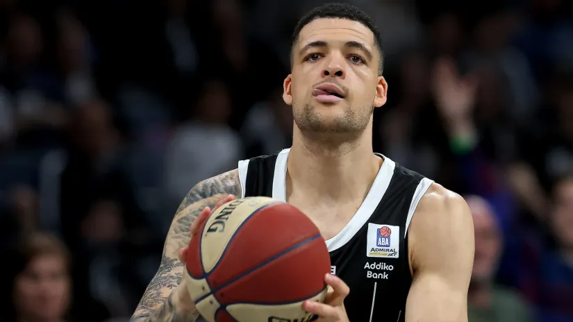

Makabi naciljao Ifea Lunberga
Danac je glavni kandidat za poziciju kombo beka u Tel Avivu
Malo je reći da Ife Lunberg nije ispunio očekivanja po dolasku u Partizan. I do je na horizontu objektivna mogućnost da crno-beli sporazumno raskinu saradnju sa Dancem nigerijskih korena, nazire se gde bi iskusni bek mogao da nastavi karijeru. Prema informacijama izraelskog Israelhayom-a, Lunberg je velika želja Makabija.
Iako je u minuloj evroligaškoj sezoni u crno-belom dresu prosečno beležio svega 7,9 poena, 2,2 skoka i tri asistencije po utakmici uz indeks korisnosti 7,3, glavni je kandidat za poziciju kombo beka u Tel Avivu. Samo dan nakon što je Italijan Klaudio Koldobela imenovan za generalnog menadžera izraelskog velikana, počelo je planiranje i sklapanje tima za narednu evroligašku sezonu.
Znamo koliko je Makabi podbacio u takmičarskoj 2024/25, a o tome dovoljno svedoči 16 pozicija na tabeli koja broji 18 klubova i skor od 11 pobeda i 23 poraza. Veruju u Makabiju da bi mogli da revitalizuju Danca nakon primetnog pada nakon prelaska iz redova Virtusa u tabor Partizan Mozzart Beta.
Poređenja radi, u pretprošloj sezoni Lundberg je prosečio 9,3 poena, 2za nešto više od 18 minuta na terenu. U Partizanu na parketu je u proseku provodio 24 minuta, ali mu je košgeterski učinak značajno opao, kao i procenti šuta.